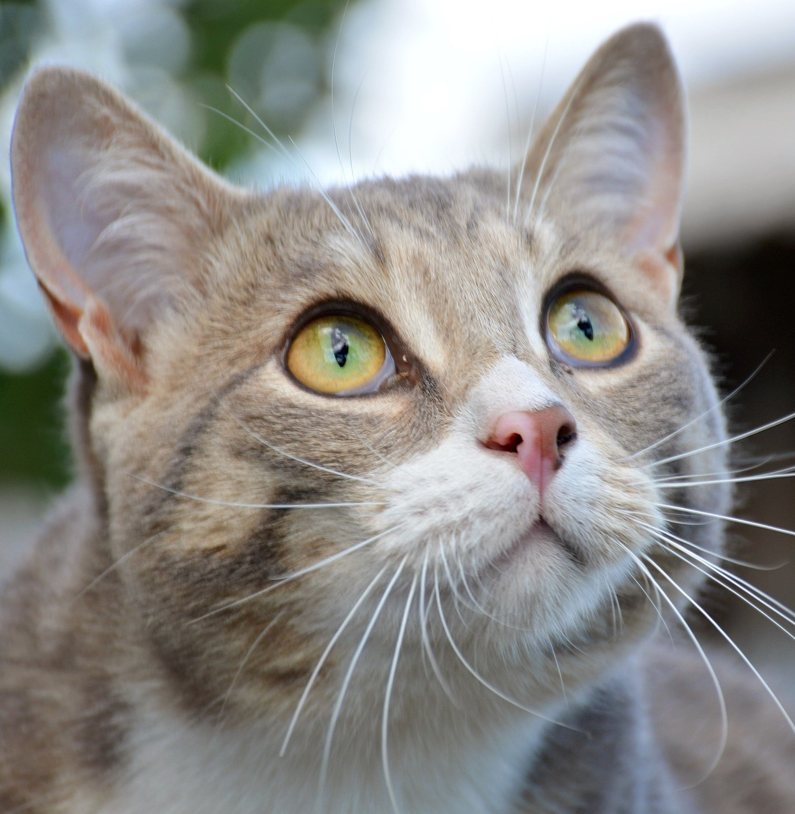

|  |
★★★ 最新情報 ★★★
・お知らせ
Albus Box ver.0.1.2を公開しました
・更新情報
|
||||||||||
|
阿部 余地男（あべ よちお） 生年月日 2014年1月6日 血液型 A型 プロフィール |
|||||||||||
|
Daisy, Daisy, give me your answer do I'm half crazy all for the love of you It won't be a stylish marriage I can't afford a carriage But you'll look sweet upon the seat Of a bicycle built for two. mail:yotiosoft2014@gmail.com |
|||||||||||
|
所属: 余地男オフィス 999-9999 度井仲県度井仲村度井仲33-4 度井仲ロイヤルマンション810 |
|||||||||||